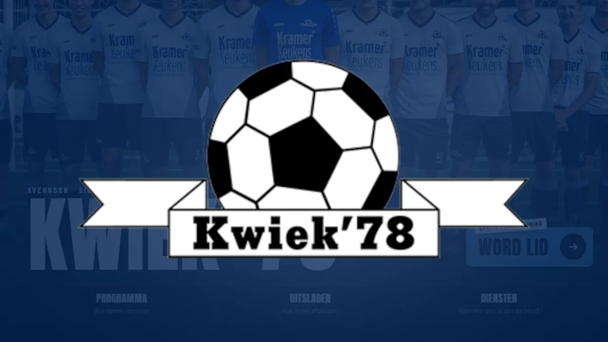

Website voor een
voetbalvereniging
Voetbalvereniging Kwiek '78 uit Avenhorn heeft een nieuwe website, gebouwd door Brand-On. In dit artikel lees je wat we gemaakt hebben, waarom we bepaalde keuzes maakten en wat andere sportclubs daaruit kunnen meenemen.

Een voetbalclub draait op vrijwilligers. Trainers, scheidsrechters, kantinediensten, de mensen achter de ledenadministratie: allemaal mensen die hun vrije tijd in de club steken. Een clubwebsite moet hen werk uit handen nemen, niet extra werk geven. Met dat uitgangspunt begonnen we aan de nieuwe site van Kwiek '78.
Over Kwiek '78
v.v. Kwiek '78 is de voetbalvereniging van Avenhorn, opgericht in 1978 en thuis op Sportpark Het Veer. De club heeft meerdere seniorenteams, een vrouwenteam, twee 35+ teams, een zaalteam en een flinke jeugdafdeling met dertien teams. Dat betekent elk weekend veel wedstrijden, veel ouders die willen weten waar hun kind moet spelen en veel vrijwilligers die moeten weten wanneer ze aan de beurt zijn.
Wat we gebouwd hebben
Bij veel clubs staat informatie verspreid over losse pagina's, groepsapps en Facebook. Voor Kwiek '78 wilden we één plek waar alles samenkomt. Bovenaan de homepage staan drie vragen die leden het vaakst hebben, elk met één klik bereikbaar:
- Programma: wie speelt wanneer? Het complete wedstrijdprogramma, te filteren op team en op thuis of uit.
- Uitslagen: hoe is het afgelopen? Uitslagen en standen per competitie, overzichtelijk bij elkaar.
- Diensten: wanneer ben ik aan de beurt? Het rooster voor vrijwilligersdiensten, zoals de kantine, op een eigen pagina.
Daaronder staat direct de eerstvolgende wedstrijd. Wie op zaterdagochtend de site opent, ziet meteen waar het om draait.
Teams, nieuws en clubinformatie
Elk team, van de senioren tot de jongste jeugd, heeft een eigen pagina. Onder Club vind je het bestuur en de commissies, de agenda, de verjaardagen, de ereleden en het informatiebulletin met huisregels en contributie. Het nieuws brengt clubberichten samen met de video's van Kwiek Inside, zodat er altijd iets nieuws te zien is.
Lid worden en sponsoring
Een vereniging leeft van nieuwe leden en sponsoren. Daarom staat de knop Word lid prominent in beeld, met een gratis proeftraining als laagdrempelige eerste stap. Sponsoren krijgen een eigen plek, inclusief uitleg over het Minutenspel. De clubwinkel is met één klik bereikbaar vanuit het menu.
Snel, mobiel en netjes geregeld
De meeste leden bekijken de site op hun telefoon, langs de lijn of in de kantine. De site is daarom eerst voor mobiel ontworpen, met een duidelijk menu en snelle laadtijden. Toegankelijkheid kreeg ook aandacht, bijvoorbeeld met een link waarmee je met het toetsenbord direct naar de inhoud springt. En omdat een club met persoonsgegevens van leden werkt, staan de privacyverklaring en AVG-informatie keurig op de site.
Vormgeving in clubkleuren
Het logo van Kwiek '78 is een stuk clubgeschiedenis, dus daar bleven we vanaf. We bouwden de vormgeving eromheen: diep blauw als basis, grote krachtige koppen en echte teamfoto's in plaats van stockbeeld. Het resultaat voelt als Kwiek, maar dan van nu.
Wat andere sportclubs hiervan kunnen leren
- Begin bij de vragen van je leden. Wie speelt wanneer, hoe is het afgelopen, wanneer moet ik helpen? Als die antwoorden direct te vinden zijn, krijgt het bestuur minder appjes.
- Maak lid worden makkelijk. Een gratis proeftraining met één duidelijke knop werkt beter dan een formulier dat ergens diep in het menu zit.
- Geef sponsoren zichtbaarheid. Een sponsor die zich gezien voelt, blijft langer. Een verzorgde website helpt ook bij het werven van nieuwe sponsoren.
- Houd het onderhoud klein. Vrijwilligers wisselen. Een site die zonder technische kennis bij te houden is, blijft actueel, ook als de webmaster van vorig jaar stopt.
Ook voor een vereniging geldt dat je gevonden wilt worden. Ouders die in Avenhorn of omgeving komen wonen, zoeken op "voetbalclub Avenhorn" of "voetballen in Koggenland". Hoe je daar hoger in komt, lees je in ons artikel over lokale SEO.
Ook een nieuwe website voor jouw club?
Brand-On is een webdesignstudio uit Purmerend, met onze ontwerper in Limmen. Avenhorn ligt daar mooi tussenin, en dat geldt voor de meeste clubs in West-Friesland en de Zaanstreek. Bekijk de site van Kwiek '78 en ons andere werk op de projectenpagina, of vraag direct een gratis concept aan. Dan bouwen we vrijblijvend een eerste versie van jullie nieuwe clubsite.
Website voor een sportvereniging
Maken jullie ook websites voor sportverenigingen?
Ja. Voor voetbalvereniging Kwiek '78 uit Avenhorn bouwden we een complete clubsite met programma, uitslagen, teampagina's, vrijwilligersdiensten en sponsoring. Of je nu een voetbalclub, hockeyclub of tennisvereniging bent: we kijken eerst wat jouw leden en vrijwilligers nodig hebben.
Wat moet er op de website van een voetbalclub staan?
In elk geval het wedstrijdprogramma, de uitslagen en standen, een pagina per team, het rooster voor vrijwilligersdiensten, informatie over lid worden en een plek voor sponsoren. Daarnaast nieuws, contactgegevens en de route naar het sportpark.
Wat kost een website voor een vereniging?
Onze websites beginnen bij 750 euro voor het Starter pakket. Een clubsite met veel teams en functies is meestal maatwerk. We maken eerst een gratis concept, zodat je vooraf ziet wat je krijgt en wat het kost. Op de tarievenpagina zie je wat er in elk pakket zit.
Kunnen vrijwilligers de website zelf bijhouden?
Dat is precies het doel. Nieuws plaatsen of een dienst aanpassen moet zonder technische kennis kunnen. Wat niet zelf hoeft, zoals hosting, updates en beveiliging, regelen wij.
Gerelateerde artikelen
Laten we jullie club
aanzetten.
Benieuwd hoe jullie clubsite eruit kan zien? Vraag een gratis concept aan, helemaal vrijblijvend. Je krijgt binnen één werkdag een persoonlijk antwoord.